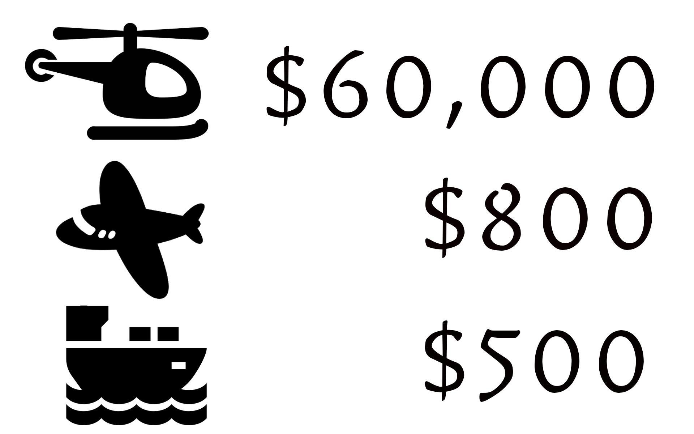

交通成本
返鄉安寧，落葉歸根。


最早之前，這是蘭嶼的名稱，由達悟族語的意思來說，是『人之島』。
島上有六個部落，包含椰油、漁人、紅頭、朗島、東清、野銀部落，分別具有各自的傳統領域與公共事務運作的組織。歷經時帶變遷，各部落也在現代生活中發展出自己的定位與特色，而海洋裡游的各種魚群、陸上的芋頭地瓜田，是他們維生的資源，又以漁業為大宗，有名的飛魚季，使得蘭嶼也被稱作『飛魚的故鄉』。
在交通上，若想往返台灣本島，主要透過海運、空運，而空運一天也是少少的班次，且使用僅19人座的小型飛機，除了旅遊旺季時，觀光客難以買到機票，島上的族群，往往在就醫往返兩島時更佳不方便。
目前蘭嶼全島並沒有醫院僅有一間衛生所，不僅需要照顧本島居民；也必須照顧外地遊客，醫療環境令人堪憂。
近幾年來縣市政府大量引進醫學中心蓋新醫院，2015年新竹縣市一口氣增設了四家大醫院，這也造成了原本醫療人力不足的問題括擴大，進一步影響到偏鄉醫療人力；目前蘭嶼衛生所僅編制4名醫師，8位護理人員，以及5位長駐護士，這樣的人力必須提供24小時醫療服務，令人唏噓。
蘭嶼的祖先是來自菲律賓巴丹島原住民。達悟族人大約800年前自現今菲律賓的巴丹群島遷入，蘭嶼鄉內總人口約為5,066人其中90%的居民為本地的達悟族人其他則為從台灣過去的漢人，蘭嶼醫療資源長期相對匱乏，蘭嶼人的平均壽命為74.95歲，比起全國的79歲少上許多。
在蘭嶼衛生所住院醫生只有4人的情況下不僅面對島上5,000的居民也須面對外來的觀光客，以2018年為例，1月至今來到蘭嶼的觀光客多達18,335人，人力吃緊的情況下還會偶爾遇到醫護人員必須護送病患來台就醫的情況，蘭嶼正在面臨著居民與醫療資源間比例的嚴重失衡。
返鄉安寧，落葉歸根。
「就醫時間」與「醫療距離」
許多病人都躲在社區裡面，除非你走進去，不然沒有人會發現，或許這就是醫療必須進入社區的重大意義。
配一副眼鏡，
你願意花多少錢?
閱讀更多台灣本島的資源而言，
一副眼鏡等於
“10分鐘以內的車程+整副配到好1000元有找”
但對於蘭嶼居民而言
一副眼鏡卻相當於
”一整天的時間+來回機票+鏡框、鏡架”,
這樣的成本等同於
"從台北搭一趟高鐵到苗栗,只為了配一副眼鏡"那樣的昂貴與不便
而日後如有任何問題，那又會是另一個問題
模糊的視線
眼球震顫
閱讀更多在蘭嶼，有一位20歲的女孩，在一次蘭嶼巡迴義診中，被醫師診斷出罹患了罕見的「眼球震顫」，女孩也因此無法繼續念書，因為她的視力不到0.2， 這種眼疾無法用藥物治療，必須進行手術，然而手術也有一定的難度。
然而蘭嶼鄉內並無任何眼科與眼鏡行，更沒有大型的醫療中心或醫院 在缺乏專業的診斷、治療與協助下，女孩只能選擇戴上不適合的眼鏡以為持正常生活 結果病情愈來愈嚴重，出現了畏光、無法定點與聚焦等狀況 造成生活許多困難。
此次義診，女孩看到了醫護人員與義工們的付出與關心，女孩的視線模糊了， 但這次是因為眼眶中泛著喜悅與感激的淚光
這次義診已為女孩未來的生命歷程點亮了一盞希望的明燈； 同時義診團隊向臺東縣政府相關單位進一步詢問：是否能提供特殊輔具 讓這樣令人鼻酸的事情不要再發生。
蘭嶼的未來
仍有許多的挑戰
閱讀更多光使眼科的問題就如此棘手，那如果是重大疾病與手術又會是怎樣的艱難。
離島地區因地處偏遠，以致醫療照護資源的取得受到限制。
加上醫療人力資源不足，容易造成都市排擠鄉村的現象
缺乏醫資源，造成了醫療業務加重，連本該由外部承接的陪同直升機後送業務
都轉嫁給了蘭嶼衛生所的護理人員，也讓蘭嶼的醫療更加困窘
追求醫療衛生資源可近性及資源平等，並在現有的醫療照護基礎上，強化向前延伸之健康促進與預防照護及向後的長照整合服務，為偏鄉及離島地區創造更好、更有效率的醫療照護環境。